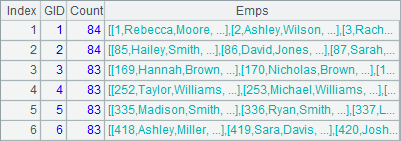
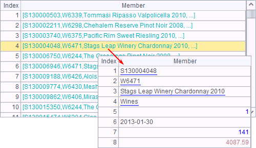

callx instruction is used in a cellset to distribute subtasks among running clustered servers. Here¡¯s the cellset parallel01.dfx:
|
|
A |
|
1 |
=file("D:/files/txt/PersonnelInfo.txt") |
|
2 |
=A1.import@t(;pPart:pAll) |
|
3 |
=A2.select(State==pState) |
|
4 |
return A3 |
The program imports a data segment from the personnel information file PersonnelInfo.txt and selects employees coming from the specified state. Here¡¯re the cellset parameters used in it:

The main program invokes parallel.dfx to find out all employees from Ohio concurrently using cluster computing:
|
|
A |
|
1 |
[192.168.1.112:8281] |
|
2 |
=callx ("D:/files/dfx/parallel01.dfx","OH",to(20),20;A1) |
|
3 |
=A2.conj() |
A1 specifies a list of parallel servers for computation. A2 uses callx to invoke these servers to execute parallel computing. When executed, A2¡¯s result is as follows:
An assignment, when performed across a server cluster, will be split into multiple tasks according to the number of parameters to be distributed among clustered servers. Then each server will allocate its task to the processes running on it which will return results separately. A2¡¯s data is a record sequence containing these results which are sequences. A3 concatenates records in these sequences to get the final result:

Through this form of parallel computing, the main program divides a complicated computational goal or a big data computation into multiple tasks, distributes them to multiple servers to compute separately and then joins the results. We will continue the cluster computing discussion in Cluster computations.